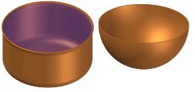

The study of Noah's Ark is greatly assisted by Genesis 6:15, where the dimensions are explicitly stated in cubits. This is regarded as a ball park figure for the size of the vessel, since the cubit can be anywhere from a petite 17.5 inches up to extreme examples 2 feet long. But is it possible to narrow this down to a preferred cubit length?
Very ancient structures and religious monuments should have been built using a cubit closely related to Noah's Ark. The reasoning is simple:
According to a straightforward reading of the Bible, it would be reasonable to expect Noah's cubit to have been the standard of measure for the Babel tower. From the Babel dispersion we should see the same cubit being transported to the fledgling nations, and nothing fits this picture better than the ubiquitous cubit. No other lineal measure is so widespread so early. There are many cubits to choose from, but there is no question that large ancient projects such as palaces and tombs were built with the longer or "royal" cubits. This would be a natural choice for the cubit of Genesis 6:15.
In addition, supplementary evidences each add a little support for the "royal" cubit which, taken together, appear to defy coincidence.
Genesis 6:15 " The length of the Ark shall be three hundred cubits, the breadth of it fifty cubits, and the height of it thirty cubits."
How long is a cubit? The word comes from the Latin cubitum which refers to the forearm. It was measured from the elbow to the fingertip. This provides a foolproof method of gauging the size of Noah's Ark - at least approximately.
There are many ancient cubits, ranging from a petite 17.5" to an outrageous 24", excluding even more radical candidates. In the key civilizations like Egypt and Babylon the cubit had two distinct sizes, a shorter "common" cubit around 18" and a longer "royal" cubit of 20" or so.

The Royal Egyptian cubit was divided into 7 palms of 4 digits each, totaling 28 digits altogether. This cubit rod shows subdivisions down to one-sixteenth of a digit (1.16mm). Photo J. Bodsworth http://www.egyptarchive.co.uk/ . Used with permission.
Short of the famous vessel turning up on a mountaintop someday, establishing the exact cubit length used for Noah's Ark may appear to be an impossible mission. Pinpoint accuracy is unrealistic, but a good place to start is simply this: Which class of cubit is the more likely candidate, the "royal" or the "common"?
The 1961 bombshell "The Genesis Flood" 1 demolished many misconceptions about the Biblical flood. Suddenly Noah's Ark was a real vessel. To counter the mindset of an overcrowded ark, Whitcomb and Morris chose a cautious cubit of 18 inches (457mm). Even the smallest Biblical Ark was enormous, nothing like the pictures in Sunday School books. Yet longer cubits were no secret, this work quoted a study by Scott 2 describing cubits from 17.5 (445mm) to more than 20 inches (508mm).
The justification given by Henry Morris 3 makes the point clear; "To be very conservative, assume the cubit to have been only 17.5 inches, the shortest of all cubits, so far as is known." This is clearly addressing the particular objection that Noah's Ark is too small to fit all the animals.
Table 1 shows cubit lengths chosen by key creationist authors dealing with Noah's Ark, all clearly driven by a conservative space argument.4
| Table 1. Cubit lengths assumed for Noah's Ark studies by key authors. | ||||
| Year | Reference | Cubit | Author's Comment | Source |
| 1961 | Whitcomb, J. C., Morris H. M., The Genesis Flood, Pres and Reformed Pub Co, 1961. | 445 (17.5") | "While it is certainly possible that the cubit referred to in Genesis 6 was longer than 17.5 inches, we shall take this shorter cubit as the basis for our calculations" p10 | Scott, R. B. Y., Weights and Measures of the Bible, The Biblical Archaeologist 22, pp. 22-40, 1959. See Appendix 1 |
| 1971 | Morris, H. M., The Ark of Noah, CRSQ Vol 8, No 2, p142-144. 1971 | 457 (18") | "Assuming the cubit to be 1.5ft, which is the most likely value" p142 | R.B.Y. Scott? |
| 1973 | Whitcomb, J. C., The World that Perished, Baker, Grand Rapids, MI; 1973 (revised ed 1988) | 445 (17.5") | "Assuming the length of the cubit to have been at least 17.5 inches, ..." p25 | W&M after R.B.Y. Scott? |
| 1975 | Giannone, R., A Comparison of the Ark with Modern Ships, CRSQ Vol 12, No1, p53, June 1975. | 457 (18") | "The cubit is understood to be 18 inches, which seems to be at least approximately correct,..." | W&M after R.B.Y. Scott? |
| 1976 | Morris, H. M., The Genesis Record, Baker Book House, p181, 1976. | 445 (17.5") | "To be very conservative, assume the cubit to have been only 17.5 inches, the shortest of all cubits, so far as is known." | Assuming R.B.Y. Scott. Very similar wording to "The Genesis Flood", by same author. |
| 1977 | Collins, D. H., Was Noah's Ark Stable?, CRSQ Vol 14, No 2, Sept 1977 | 457 (18") | "For present purposes I will assume the cubit equal to 18 inches"From cubit list in Ramm, Bernard 1956, | Ramm, B., The Christian View of Science and Scripture, Wm B. Eerdmans Pub. Co. Grand Rapids, 1954 p229." 6 |
| 1994 | Hong, S. W., et al, Safety Investigation of Noah's Ark in a Seaway, CEN TJ 8(1), 1994. | 450 (17.72") | "We adopted the common cubit (...) 17.5 inches" After Scott R.B.Y 1959. Note. They used 450mm 5. | R.B.Y. Scott (modified) |
| 1996 | Woodmorappe, J.,Noah's Ark: A Feasibility Study, ICR, p10, 1996. | 457 (18") | "All the calculations in this work involving the Ark assume a short cubit of 45.72cm." | Wright, G.R.H., Ancient Building in South Syria and Palestine, Vol 1, E'J. Brill, Leiden, p419, 1985. |
| 2001 | Gitt, W., The Most Amazing Ship in the History of the World, Fundamentum, p7, 2001 (German) | 437.5 (17.22") | "0.4375m" p8. (For comparison, Gitt provided eight other cubits including the enormous 66.69 cm Prussian cubit) | Modern Siloam Tunnel measurement (525m) compared to inscription of 1200 cubits which gives 525/1200 = 0.4375m |
In every case the "common" cubit has been chosen, despite clear evidence that it was the "royal" cubit that dominated major building projects of the earliest civilizations, Noah's immediate descendents. These references are exclusively "Hebrew" cubits, but Noah was no Hebrew. The dominant primary source is the 1959 paper by R.B.Y. Scott which spent about four pages on the 'Biblical' cubit, linking it to things like the Siloam tunnel. (Appendix 1) However, the 'Biblical' cubit and the 'Hebrew' cubit are not necessarily the same thing, since Noah and the Siloam tunnel 7 are worlds apart. The Hebrew cubit defined by relatively recent evidence in Palestine isn't likely to yield clues about a pre-Babel, pre-Flood construction project.
Scott is happy to let late Hebrew architecture in Palestine define Solomon's Temple and even Moses' Tabernacle. This is not surprising considering his view of Bible history, typifying his JEPD 8 thinking with the term "authors of the Priestly document" in reference to Exodus. The JEPD viewpoint would have the story of Noah's Ark fabricated at roughly the same time as the architecture that survives in Palestine, so a similar cubit is considered viable. In reality there is a 2000 year gap, and plenty of ancient cubits in between. Ironically, the perfection of the Ark's proportions given in Genesis 6:15 is yet another problem for the documentary theory.9
The cubit length of 17.5" to 18" was assumed in most studies because the
focus had been on the Ark's volume. The authors took the conservative value of
cubit size and then demonstrated that even the minimum space was adequate to fit
all the animals on board. However, there are reasons to think longer
alternatives, such as the royal cubits of Egypt and Babylon, may be preferable. I am certainly open to a longer cubit".
Dr John Morris (ICR President and author), July 27 2004
10
It is commendable that creationist authors have upheld the shorter cubit to avoid the charge of exaggerating animal carrying capacity. The authors were making it clear that even the smallest Ark can fit the animals, and this was at a time when its massive proportions were almost a novelty. As it turns out, space is not really a problem. Woodmorappe loads the animals and cargo with room to spare, despite his assertion .."I intentionally made the Ark-crowding problem so much more difficult than it actually was,..." 11
Yet this intentional Ark-crowding emphasis is not applied to hull shape. The depiction of a rectangular Ark takes an extreme view on ship design, favoring volume at the expense of seakeeping performance. So a short cubit has limited apologetic advantage when the Ark is effectively block-shaped. Some argue the Hebrew "tebah" or "tbh" indicates a block shape, but this claim is unwarranted.12
The short cubit also leaves the Ark's defense vulnerable to exactly the opposite charge - understating the size of Noah's Ark to minimize the problem of an oversize wooden vessel coming apart in a big sea. Such a criticism warrants attention, larger hulls are more sensitive to wave loads13, which increases the risk of "springing a leak". Even the shortest version of Noah's Ark exceeds the length of any wooden ship for which there are indisputable records 14.
So skeptics claim the Ark is too small to fit all the animals, yet too big to be made out of wood. An apparent dilemma.
Consider the alleged ark-crowding problem. Whenever the allegation is made of a crowded Ark, the accompanying estimates ignore the creationist definition of animal types 15. No skeptic would bother to attack the Ark's volume on the creationist's own playing field where the alleged millions of species have been trimmed down to Woodmorappe's 16000 16 or the 35000 17 estimate of Whitcomb and Morris. This overrules the effect of a 13 percent discount on cubit length.
The size of a wooden hull is a different matter. Strengths and wave loads can be estimated using known relationships such as ship rules and various methods of analysis. Ships sizes can be compared. Even with the short cubit the Ark is longer than the known range for a wooden hull, even hulls reinforced with iron straps 18. If there is a chance that the Ark was larger again, then the structure must be assessed using the worst possible cubit.
However, these ideas assume each cubit is an equal contender, with no particular historical choice being more attractive than another. If there are reasons to think a particular size may be preferable, one might ignore the skeptic focus and look for the most likely cubit size referred to in Genesis 6:15, for the sake of Biblical accuracy at least.
Why not use a short cubit when dealing with the space issue, and a long cubit for the hull strength concerns? The main problem with this approach is that ship design is not a simple dichotomy. There are many other factors, adding multiple dimensions to the playing field. For example, what about the claims that the ark is too difficult for ancient people to build, or incapable of handling the severe flood conditions?
For simplicity, consider only two simple parameters - cubit length and hull shape. The following table shows how a different Ark is needed in each case to conservatively address a few simple arguments.
| Table 2. Common objections and corresponding conservative interpretations of the Ark | |||||
| Focus | Common Objection | Which Cubit? | Which Hull shape? | Other constraints | Comment |
| Capacity | Too small to fit animals | Smallest | Most streamlined | Largest number of animals | Overruled by species/types argument |
| Stability | Capsize risk | Smallest | Least stable | Worst waves/wind | Relatively assessable |
| Strength | Wood is too weak | Largest | Most block-like | Weakest wood, worst waves | Relatively assessable |
| Construction | Too difficult to make | Largest | Most complex | Least people, worst tools | Extrapolate known shipbuilding |
| Seakeeping | Occupants thrown around | Smallest | Most block-like | Worst waves/wind | Relatively assessable |
The currently depicted creationist ark (small cubit / block-like) is actually geared towards answering the seakeeping issue, a relatively rare question. There are, of course, many more arguments and parameters to play with - ventilation, storm proofing, broaching resistance, static loading variations, various structural approaches etc
This would end up with a confusing array of Ark definitions. Which one should be used in a picture? What about an interior picture illustrating headroom? And how tall should Noah be?
Another problem is that by surrendering the pursuit of the most balanced picture of the Biblical ark, other benefits are not realized. For example, a narrowed cubit range enhances the resolution of related analysis, such as hull strength, interior layout, worst case sea state 19, animal housing and/or numbers, and even minor details such as ceiling height. And how tall should Noah be, anyway?
The most productive option might be to ignore the skeptics and check whether a best cubit can be found for Genesis 6. If at all possible, a demonstration of historical and Biblical support for a particular cubit length could be very helpful. While this paper is not necessarily a watertight argument for an exact definition of Noah's cubit, it is at least an attempt to collate some of the relevant clues - clues that seem to favor a larger cubit than the de facto standard.
The level of sophistication necessary for a 300 cubit seagoing vessel could indicate standardization in a pre-flood society 20, using a cubit from someone famous like Adam. Alternatively, it may have been Noah's own forearm.
However, the origin is immaterial. Immediately after the flood there was only one cubit in the world.
History has shown that standards of measure are rather persistent 21, especially in a continuous culture. As Noah's family quickly expanded, the combination of longevity and "one mindedness" Gen 11:6 would keep the default cubit intact right through to the Babel Tower.
The Babel dispersion should have sent this same cubit around the world. It may have been neglected by some, but the momentum of infrastructure would be most evident in the nations that stayed close by. The best place to look for Noah's cubit would be the early Mediterranean constructions. By far the most accurately defined cubit is the Royal Egyptian cubit 22, used in the pyramids of Gezah. There are other examples, such as the copper rod known as the Nippur cubit 23 found in Mesopotamia. The Hebrews also had dual cubit system very similar in length to the Egyptians, but using Babylonian subdivisions 24.

Taking the Egyptian case, the 20.7" (524mm) cubit has been considered excessive for a Pharaohic forearm, especially if man is allegedly increasing in stature as we 'evolve' 25. 99905 The knee-jerk reaction is to label the royal cubit an exaggeration, but this makes little sense in light of Egypt's reliable metrology. So more than a few (non creationist) authors have put forward complicated theories for the origin of this cubit. Some even claim this cubit is not anatomical 26 at all, but a geometrically derived length or even a special ratio of the diameter of the earth! However, its very name in many languages is related to the arm 27.
The 'royal' cubit is so named because it is evident in the dimensions of royal buildings in places like Egypt and the "cradle of civilization" - the Mesopotamian valley. A shorter cubit was used for more mundane measurements, known today as the 'common' cubit. Some historians (and pre-historians!) make claims that the common cubit predates the "royal" 28, as if the oversized "royal cubit" was introduced when standardization became necessary. There is no real evidence for this theory. Both burst onto the scene as suddenly as the impressive civilizations themselves 29.
Common cubits were less than 18" which is a better match to the size of a sarcophagus, or the dimensions of a skeletal remains. So being "in line with archeology", it was the common cubit that was considered realistic, the royal cubit an aberration. So, despite the fact that the royal Egyptian cubit is by far the best example of ancient metrology, and the "royal" cubits were the choice for big ancient projects, the typical Bible dictionary says the cubit was 18 inches.
It may depend on what part of the Bible's history we are talking about.
Genesis was written (or compiled) by Moses around 1400BC (Ussher timeline). Obviously Moses would have been familiar with both the common and royal cubit lengths. Which one did he mean in Genesis? Perhaps here is a clue: When he wrote about the length of King Og's bed (Duet 3:11) he used the term "the cubit of man", which sounds like a reference to something anatomically contemporaneous, or a "common" cubit. If it is a hint for the common cubit, then the unqualified cubits in the rest of his writings (like Genesis) are likely to be the other ones - royal cubits.
Moses used unqualified cubits for the pattern of the Tabernacle. (Ex 25-27). The Hebrew craftsmen 30 would have been well versed in the royal cubit from Egypt before they built the Tabernacle. Zuidhof 31 argues for the 7 palm royal as the most appropriate measure for the Tabernacle covering. The royal cubit is not impossible here.
A stronger clue comes some time later when Solomon, following David's divinely inspired directions 32 for the temple design, used "the cubit after the first measure". Which cubit was this? Obviously not the "usual" cubit of the Hebrews, which looks very much like the common from Biblically "late" archeological evidence like the Siloam tunnel 33. So it must have been the royal, that Moses used for the Tabernacle and Ark of the Covenant. (i.e. from Solomon's perspective, the "old" measure). This almost looks as though the royal cubit was the "correct" one for temples, something even the Egyptian pagans understood. Solomon's had links to Egypt (1 Kings 3:1) Zuidhof makes a case for the royal cubit for Solomon's molten sea 34.
Lastly, in Ezekiel's vision, an angel measures the temple with a reed (rod) of 6 cubits, each cubit being of a "cubit plus a handbreadth". Amazingly, some have argued against this being a definition of the royal cubit, but to Ezekiel's audience (which includes us), there is probably no better way to say "Royal Cubit", since it was always one handbreadth longer than the common cubit - in both Egypt and Babylon.
So God specified royal cubits for the future temple, there's a good chance he specified the same for Solomon's Temple 35. It may have been used by Moses' Tabernacle. It was definitely the cubit of choice for ancient and impressive constructions of early Egypt and Babylon - especially anything religious.
Noah's Ark was divinely specified, big and early - a perfect candidate for the royal cubit.
The royal was used for building, especially state sponsored project like palaces, tombs and things that look important. The ancient monuments at Gezah give us a cubit that is beyond question. Ref number 6...?
Mysterious royal cubit origin. "The anatomical length (...) cannot possibly be as long as the royal cubit of 52.5cm" 36. Royal cubits have an extra palm width, making seven palms in Egypt and six in Babylon. How that helped the construction industry in Egypt is anybody's guess, the idea of changing from six to seven palms certainly makes no sense for cubit fractions like 1/2 or 1/3. It makes more sense if Egypt started with the royal length and made their own divisions later.
Uniformity of royal cubits. It is difficult to imagine how a supposedly non-anatomical measure could turn up in different nations with distinct subdivisions yet have a suspiciously similar length. If the royal cubit was a fictitious oversized measurement designed to make some king look larger than life, why would they all exaggerate - equally? There is even mention of English, Chinese and Mexico's Aztec cubits within the range 20.4" to 20.9" (518 - 531mm).
|
Table 3. Uniformity of royal / long / building cubits |
||
| Civilization | Length (mm) | Length (in) |
| Mesopotamia | 522 - 532 | 20.6 - 20.9 |
| Persia | 520 - 543 | 20.5 - 21.4 |
| Egypt | 524 - 525 | 20.64 - 20.66 |
Respect for the royal cubit. This indicates an important legacy, like a standard handed down from the "Gods". There is a good case that the "Gods" of certain cultures could be early post-flood founders a few generations after Noah 37. In Egypt, building overseers required the REC to be calibrated against a precision standard at regular intervals. Failure to do so was punishable by death. The standard had religious significance.
Ezekiel measured the new temple with a royal cubit. Regardless of whether people shrank or the royal cubit has always been "a cubit and a palm", God had Ezekiel use one of these to measure the temple 38. Certainly this is how Ezekiel and his audience would have understood it - not the ordinary cubit, the royal one.
Solomon may have used the royal cubit for the temple. Archeologists can't inspect the first temple, but the second temple is generally thought to have used the shorter cubit 39. Constructions in Palestine also reveal a short cubit, so Solomon's "cubit after the first measure" (2 Chron 3:3) is probably the other one - long. Solomon is recorded as the wisest man of all time (surpassing Adam and Noah), so he was more than capable of piecing a bit of history together. Ezekiel's vision had royal cubits in it, so it would be consistent for God to use the same cubit the divine plans that Solomon received 32. Solomon's bronze sea seems to make a lot more sense in royal cubits 25. (see Appendix 1)
Mother of the Arm. The Hebrew for Cubit is "ammah", derived from mother, as in "mother unit of measure". The same word is used throughout the Old Testament as a unit of length. This could convey the idea of a measurement passed down from an ancestor, who defined the original or 'mother' cubit. An ancient measure, even in Moses day.
Moses knew two cubits. Stephen described Moses as "educated in all the wisdom of the Egyptians" (Acts 7:22). Moses would have known the royal and common cubit definitions from Egypt. Throughout Genesis he uses the term "cubit", but a contemporary measurement of the enormous bed of King Og is qualified with the term "cubit of a man" 40, which itself sounds a bit like "common cubit". The giant Og, king of Bashan slept in a bed 9 cubits long. By the short cubit (17.5") this is 13 feet, by the long cubit almost 16 feet. (Now that is excessive, making the short cubit preferable). From Moses' point of view, Genesis was history, but Deuteronomy was current news "is it not in Rabbath of the children of the Ammon? Deut 3:11". Moses never made such a distinction in Genesis or Exodus, so this could be the first time he talked about the common cubit.
Noah was no Hebrew. Later Hebrew constructions (such as the Siloam tunnel) are based on the common cubit. Noah's Ark is unlikely to have anything to do with the length of common Hebrew cubits determined from the ruins of Palestine. Noah's Ark was constructed a long, long time before Israel appeared. Noah was no Hebrew, he built the Ark in a different country, at a different time and in a different world!
Too Short for an Ante-Diluvian forearm. The Creationist model maintains the Biblical teaching of pre-flood life spans approaching a thousand years. Combined with the thoroughly documented trend of larger-than-today fossils, it would be natural to assume the ante-diluvians were taller than we are today. Based on cubit ratio averages, the short cubit gives a stature of around 5'6", too short for the pristine human that defined Noah's Cubit - whether Noah himself or someone else, like Adam.
The Ark should be an Ideal Size. This may seem obvious, too large and Noah is wasting construction effort, too small and the voyage will be cramped. But an arbitrary choice of the smallest cubit ignores the potential explanatory power of a best cubit. Reverting to a short cubit for the sake of a single (and not very palatable) argument compromises other factors, such as cross-checking animal carrying capacity with estimates from barominology, or theoretical demonstration of sufficient hull strength.
JEPD Influence. Serious cubit studies are rather few, and R.B.Y Scott has been a primary source for cubit information used for Noah's Ark. If a bunch of scribes really did get together to make up a story called Genesis then the common Hebrew cubit is a fine choice for Noah's Ark. But if Moses got the Ark's dimensions passed down to him (or retold by God himself), we don't bother rummaging around Palestine to find Noah's cubit. There are more ancient places to look.
No Unit Conversion evident. The dimensions given in Genesis 6:15 would naturally be taken to be God's original numbers. If the dimensions of Genesis 6:15 had been converted into another cubit length by Moses (for the sake of his audience), then he should not have come up with the round numbers 300 x 50 x 30. Since he was conversant in the two cubits, ("cubits" and the "cubit of man") Moses was capable of doing this conversion. But he 'left' them in their original form, and implies they are a different cubit to the "cubit of man".
A genuine 300 cubits. Noah was given the dimensions, but was this the internal or external size? 41 The walls of the vessel could easily be 1 cubit thick (planks, frames and ceiling) which immediately consumes at least 10% of the Ark's volume. Knowing this, Noah may have gone the extra distance to be sure he was meeting the specification. Along the same lines, if Noah used a cubit only 18 inches long, was he doing an honest job? He would use a genuine cubit, not the smallest one he could find.
Dishonest measures. Dishonest weights and measures are an abomination to the LORD (Pr 20:10). Could this explain the shorter cubit? Commercial dishonesty would naturally minimize the unit of length. Moses mentions this in Le 19:36, De 25:13.
The Common Cubit is Older than the Royal. They are both old. The assumption of an earlier "common" cubit is based on a model of gradual development of civilization, not archeological evidence. In Egypt, the royal cubit is clearly observed well before any "certain vestiges of the small cubit have been recorded". Since the royal or building cubits are obviously superior to the common cubit, they sometimes imply the ancients came up with the longer cubit at a later date. Trouble is, few commentators are brave enough to postulated a rough date for the origin of the longer cubit standard. Chances are, there isn't one, because it goes right back to the flood. The royal cubit bursts onto the architectural scene as suddenly as the spectacular constructions themselves.
Perhaps Noah was shorter than normal. At a sub-optimal 5'6", Noah would be out-of-place in the pristine ante-diluvian world 42. He lived 20 years longer than Adam. Even today stature is used as an indicator of general health in a population. Imagine running with the idea of Noah using his own shorter-than-average forearm. In that case Moses should have called it "the cubit of Noah" if the definition was being introduced at this point in time. More importantly, if Noah deliberately picked a short cubit (his own) when his ancestors towered over him, this borders on the issue of "dishonest measures" that God abhors. Noah cheating on the Ark dimensions!
The royal cubit was not a true cubit. We can't be sure the cubit-plus-handbreath definition of the Royal Egyptian cubit 43 is proof that original came about that way. Whether it did or not, the big important ancient structures used it, and so did the angel in Ezekiel vision. Proof of a longer ante-diluvian forearm is not the central issue, but simply a clue.
Moses converted the dimensions of Genesis 6:!5. The Ark is stated in round numbers 300 long, 50 wide and 30 high, excellent proportions for ship stability and sea-keeping performance 44. Genesis 6:15 indicates that God gave the dimensions to Noah. There is no indication that the numbers have been modified, and being whole numbers, it is more natural to treat them as God's original. Conversion from one cubit to another would produce ugly numbers.
This study raises the possibility of the Ark being larger than current estimates. Previous studies have commendably used the short cubit to draw attention to the generous proportions of Noah's Ark. But a conservative argument cannot be distilled down to a single design of any particular cubit. The complexity of interrelationships makes a deliberate choice of an understated cubit troublesome for analysis and depiction.
Let's assume for a moment that Noah used a long cubit. God then defined an Ark 515 ft (157m) long. Obviously the Ark should have been a perfect fit, otherwise God made Noah do a whole lot of work for nothing. Now we have a problem. Woodmorappe's calculations show that the suggested the 16000 animals fit easily into an 18" cubit Ark, but if the Ark was built using a cubit closer to 21" then the space calculations are out by almost 60%. Would this show his estimates were wrong, or that he packed them too tight perhaps?
When it comes to ancient cubits, it is the application, similarity and mysterious origin of the royal cubits that make them such strong contenders. The chance of post-flood variation before Babel is virtually nil, so Noah's cubit should have continued relatively intact right up to the royal building cubits of Babylon and Egypt. At the very least, the sum of arguments for using the royal cubit to define Noah's Ark is much stronger than the case for the common cubit.
The common cubit is small. Can a pre-flood cubit define a human smaller than a modern average after 4500 years of a creation in bondage to decay? (Romans 8:21).
The Bible describes three major constructions that are specified by a divine blueprint. Ezekiel's temple (plainly a royal cubit), Solomon's temple (cubit after the first measure - logically a royal cubit) and Noah's Ark (an unqualified cubit where the qualified cubit was the common). Biblically, a common cubit for Noah's Ark appears out of place.
Of the ancient royal cubits, the REC is a good choice because of its accuracy. Another place to look is Babylon, where the people stayed put through the dispersion and carried on with the infrastructure. The general consensus among scholars is that cubit began in Sumeria, which is supportive of the NBR model. On the other side of the Zagros mountains, Persian history goes back a bit too. Not that it really matters, nearly all these royal cubits are within half an inch of 21 inches: 520mm (20.5") to 546mm (21.4").
Table 4 shows cubits listed by Morris 3, and the effect of a change from the default 18" cubit. The cubit is assumed to be 27 percent of stature.
| Table 4. Common and Royal Cubits listed by Morris 1976 | |||||
| Class | Cubit | Length mm (in) |
Stature mm (in) |
Ark Length m (ft) |
Volume Change |
| Common Cubits | Short Hebrew | 445 (17.5) | 1636 (5' 4") | 133 (436) | -8% |
| Short Egyptian | 447 (17.6) | 1646 (5' 5") | 134 (440) | -7% | |
| Common (Greek) | 457 (18) | 1683 (5' 6") | 137 (449) | 0% | |
| Royal Cubits | Babylonian Royal | 503 (19.8) | 1852 (6' 1") | 151 (495) | 33% |
| Long Hebrew | 518 (20.4) | 1907 (6' 3") | 155 (509) | 46% | |
| Royal Egyptian | 524 (20.6) | 1929 (6' 4") | 157 (515) | 50% | |
Other cubits include: Arabian (black) cubit (21.3"), Arabian (hashimi) cubit (25.6"), Assyrian cubit (21.6"), Greek (18.3") and Roman (17.5"). The Nippur cubit of 517.2mm (20.17") is the oldest surviving standard 23, but architectural evidence of the royal Egyptian cubit is believed to be centuries older.
1. Whitcomb, J. C., Morris, H. M. The Genesis Flood, Pres and Reformed Pub Co., 1961. A classic apologetic for Biblical creationism and the universality of the Flood. After 44 years the book is still a powerfully argued case with surprisingly few superseded creationist arguments, apart from a lowered emphasis on the canopy theory by today's creationists. Return to text
2. Scott, R.B.Y., Weights and Measures of the Bible, The Biblical Archeologist, Vol. XXII, No. 2, pp. 22-27, May 1959. "The Babylonians has a 'royal' cubit of about 19.8 inches, the Egyptians had a longer and shorter cubit of about 20.65 inches and 17.6 inches respectively, while the Hebrews apparently had a long cubit of 20.4 inches (Ezek. 40:5) and a common cubit of about 17.5 inches." This is quoted in "The Genesis Flood". Return to text
3. Morris, H. M., The Genesis Record, Baker Book House, p181, 1976. Return to text
4. The only exception to the approximately-conservative-cubit rule is in the article by Morris CSRQ 8/2 where 1.5 feet is termed "the most likely value". No reasoning is given for why this length is the "most likely" in Noah's pre-flood world. Return to text
5. The Hong study approximated Scott's 17.5" cubit. Their Ark of 13.5m depth, 22.5m breadth and 135m length implies a unique cubit of 450mm (17.72"). Return to text
6. Ramm is cited 40 times in "The Genesis Flood" with particular emphasis against his belief in a local flood. Ramm's supposes a Caucasian-only flood event (a form of local flood dogma), and considers death and suffering to be part of God's original creation (Summarized by the term "Evil is inherent in nature" G.C Berkouwer, The Providence of God, Wm B. Eerdmans Pub. Co., Grand Rapids, p256, 1952.) Return to text
7. The Siloam Inscription commemorates the completion of "Hezekiah's tunnel", usually ascribed to Judah's king Hezekiah (727 to 698 BC The Annals of the world Ussher, 715 to 686 BC Baker Encyclopedia of the Bible 1988), but Rogerson and Davies argue for a later Hasmonian date. Rogerson, J.W., Davies, P.R., Was the Siloam Tunnel Built by Hezekiah?, Biblical Archeologist 59 S, pp. 138-149, 1996. Return to text
8. The JEPD hypothesis (or documentary hypothesis) claims that Moses did not write the Pentatuech but that it was penned well after the nation of Israel had been established. Disregarding the clear teaching that Moses was the author (by Jesus Christ himself), the theory claims a variety of authors, labeled Jehovist, Elohist, Priestly and Deuteronomist gradually put the writings together nearly a thousand years after Moses. The thoroughly debunked theory alleges that variations in style constitute proof that there were different authors involved. Return to text
9. An implausible story: Non-seafaring Jewish editors somehow guessed a hydrodynamically optimal ship design. [99908] No contemporary ships of similar scale are known, and the alleged inspiration of their storytelling is supposed to be the Babylonian flood stories like the Epic of Gilgamesh and it's absurd cube-shaped "Ark". Yet the JEPD advocates fail to question how a sound specification for a seagoing ship could arise by accident, while using long defunct words like "tebah" or "gopher wood" that made no sense to anyone at the time. Jesus gave Moses the credit of authorship, so does Jewish and Christian tradition until a few commentators came along 150 years ago. Return to text
10. Quote from email correspondence included here with permission from Dr John Morris. Return to text
11. Woodmorappe, J., Noah's Ark: A Feasibility Study, ICR, p7, 1996. Return to text
12. Lovett, T., Does Ark mean Box? 2005 http://www.worldwideflood.com/ark/shape/ark_box.htm The word for Noah's Ark ("tbh") is shared by only one other item in scripture, the basket of baby Moses. The claim for a cuboid Ark of Noah rests on the Septuagint decision to swap the basket of baby Moses for the Ark of the Covenant, with the assumption that the latter was a rectangular prism. It is unlikely that the baby basket was this shape, and definitely not the same proportions as Noah's Ark. There is a better chance the word has no shape connotation in the first place, which would mean the Bible tells us nothing about hull form, other than give dimensions. Return to text
13. See comment by Tim Lovett: http://www.worldwideflood.com/ark/hull_calcs/wave_bm1.htm. For ships of similar size to the Ark, ABS design rules for ships in unrestricted waters relate the hull's necessary bending strength as a function of the vessel's length to the power of 3.5. This implies a necessary 60% increase in section modulus when swapping from a common to a royal cubit (15% length increase). ABS Rules for Building and Classing Steel Vessels 2004. Part 3 , Chapter 2, Section 1, Subsection 3.5.1 "Wave Bending Moment Amidships". Return to text
14. Levanthes, L. When China Rules the Seas, Oxford Univ Press, pp. 75 - 85, 1994. (Illustration p. 21) The largest wooden vessels on record are the 15th century Chinese treasure ships of Cheng Ho. Such dramatic scale is the subject of current debate. Chinese records pointing to ships over 500ft long were dismissed as exaggeration, but the discovery in 1962 of an oversize rudder post lent support to the claim. Similar doubts about ancient records of oversized Greek triremes have been quelled by evidence of the existence of huge bronze bow rams. Return to text
15. An exaggerated example aired by the BBC; "There are about 30 million species of animals in the world". Bowen, J., Did Noah Really Build an Ark?, BBC, 2004. An ostensibly similar claim states; "Today we know about 30 million modern and extinct species of organisms". Plimer, I., Telling Lies for God. Random House Aust. p109, 1994. We don't know this at all. Even the current number of identified species is uncertain, somewhere between 1.5 and 1.8 million, mostly insects - beetles in particular. The sole source for a 30 million figure is the controversial extrapolation of beetle studies in the Panama by Terry Erwin of the Smithsonian Institute. Return to text
16. Woodmorappe, J., 1996, Noah's Ark: A Feasibility Study, ICR, p13, 1996. "There were nearly 16000 animals on the Ark" (Total 15,754. Table 1, p10.) Return to text
17. Whitcomb, J. C., Morris, H. M. The Genesis Flood, Pres and Reformed Pub Co., 1961. Animal estimate Return to text
18. Crothers, W. L., The American-Built Clipper Ship, 1850-1856: International Marine/Ragged Mtn Press, 2000. The largest tall ships of the late 1800's and early 1900's began to apply iron bracing within the hull structure to increase strength and rigidity. Noah's Ark is longer than these ships even using the smallest (17.5") cubit. Return to text
19. The proportions and scale of the Ark (Genesis 6:15) might be yield clues about worst case sea state and wind speeds. Similarly the geological record provides can indicate things like water velocity based on the size of a transported boulder. Other facets of the flood model might benefit from a more confident definition of cubit length. Return to text
20. There are logical limits to ante-diluvian technology. To begin with, Noah was not as wise as Solomon, so it is unreasonable to expect Noah's engineering greatly surpassing Solomon, except that he had the advantage of much longer working lifetime. In terms of ante-diluvian technology, the Ark was made of wood, not metal which is superior. Return to text
21. Continuity of standards. The Royal Egyptian cubit spanned thousands of years and varied less than 5%. Even as late as 1960, cubits were still used in some countries. In a continuous civilization, an important base-unit like length is not easily changed. Consider the effort it took to convert to the metric system. We still use 90 degrees in a right angle and divide hours into 60 minutes of 60 seconds- a legacy of the ancient Babylonians. Going back still further, we have never stopped using a 7 day week. Return to text
22. The Royal Egyptian Cubit (REC): Many Egyptian constructions such as the pyramids of Geza used the 524mm (20.7") Royal Egyptian Cubit. This cubit has been accurately determined, not only from the constructions themselves, but also from actual cubit standards left behind by the ancient craftsmen. In 1877, Petrie published his findings, saying that "about a dozen of the actual cubit rods that are known yield 20.65 ± .01 inches". Egypt has the earliest architectural evidence from which a cubit can be securely established. Return to text
23. Cubits in Mesopotamia are rare: Wooden "cubit rods" decay in the wet soil, so the length is obtained from buildings that were laid out in cubits. A copper standard was unearthed, but the general picture is that cubits outside of Egypt were less exact. Variation in these measurements is due to the lack of reliable records and the tolerance limitations of ancient construction. The Nippur cubit is a copper bar dated around 1950BC, defining the Sumerian cubit as 516.2mm (20.17"). Return to text
24. The International Standard Bible Encyclopedia. "The standard for measures of length among the Hebrews. They derived it from the Babylonians, but a similar measure was used in Egypt... The Babylonians early adopted a .... double standard, the so-called royal cubit and the ordinary one. From the remains of buildings in Assyria and Babylonia, the former is made out to be about 20.6 inches, and a cubit of similar length was used in Egypt and must have been known to the Hebrews. This was probably the cubit mentioned by Ezekiel 40:5 and perhaps that of Solomon's temple, "cubits after the first measure" (2 Chronicles 3:3), i.e. the ancient cubit. The ordinary cubit of commerce was shorter, and has been variously estimated at between 16 and 18 or more inches, but the evidence of the Siloam inscription and of the tombs in Palestine seems to indicate 17.6 inches as the average length. Return to text
25. A common false perception is that centuries ago people were tiny. However, "in the late Middle Ages the Dutch were taller than at the first half of the 19th century." Hans de Beer, Economics and Human Biology, Univ of Munich, pp. 45-55, 2/2004. Good nutrition is more likely to allow a person to grow to their correct height - at least in terms of population averages. Yet even in medieval England, human remains show average stature of over 5'6". Daniell, C., Death and Burial in Medieval England 1066-1550, p.134 London: Routledge, 1997. Genetics is a bigger factor than nutrition. The Dinka of Sudan are the tallest group in the world yet perilously persecuted. The black southerners, who are Christians and pagans, rebelled against the Muslims from northern Sudan who traditionally captured them for use as slaves. Roughly 2 million people have died in two decades of civil war. The Guiness Book of Records struck the 6'1" average height of the Dinka from their record books and replaced them with the 6'0" Tutsi (Watussi) several years ago. Return to text
26. Anatomic. The study of the human physical dimensions is called anthropometry The cubit is normally defined as the length from bent elbow to fingertip. This measurement varies with stature, the Mishna (Jewish writings) give the height of a man as 4 cubits, a ratio of 25%. taken from UK airmen (Ref 1) indicate a ratio closer to 28%. My own ratio is 27.7%. Published ratios by Galton (350 adult males) 26.8%, Macdonell (3000 prison inmates) 27.1%, Shuster (Oxford students) 26.9%, (Correlation coefficient of Galton and Macdonell was 0.8), indicate that 27% might be fair. This gives a stature of 1693mm (5' 61/2") based on an 18" cubit. According to NHANES III Survey conducted in the USA 1988-1994, a white male stature of 5'6" is at the 5th percentile - so the 18 inch cubit is only slightly better than being the shortest person in every twenty today. Return to text
27. References to "arm" in the name of the cubit. Hebrew "ammah", Latin "Cubitum"....Egyptian? Greek? Return to text
28. Refs for the common pre-dating the royal. Common first theories? Return to text
29. "With spectacular suddenness, an architecture sprang up that was suitable for kings and gods (...) stone monuments that rank with the most impressive of any age" . Casson, L., Ancient Egypt, Leonard Krieger, Time Life Books, 1966. Return to text
30. Exodus records Hebrew craftsmen like Bezalel and Oholiab, along with "all the able men" to which God gave ability. Solomon's divinely specified temple was also a masterpiece, supervised by the man whom "God gave wisdom and understanding beyond measure, and largeness of mind". Extrapolation to Noah's case would be natural. Return to text
31. Zuidhof points out 7-based proportions of the coverings of the tabernacle (Ex 26 and 36), stating that
"cubits of the old standard: could hardly mean anything other than a reference to the so-called Cubit of Moses, the standard employed in the construction of the tabernacle. We may assume that the Hebrews used cubit rods derived from the REC of seven handbreadths, as their craftsmen had originally learned their trade in Egypt (Ex 38:21-23, 32:4, Acts 7:22)"
Another point in favor of the application of seven-handbreadth cubit in the construction of the tabernacle and temple is the fact that the number seven is so frequently encountered with religious ceremonies, as in seven days, seven sabaths, or seven sprinklings of blood. Return to text
32. The plans for the temple were divinely revealed to David, who passed it on to his son Solomon. (1 Chron 28:11) It is clear that David's plans were divinely inspired (1 Chron 28:19 "All this", David said, "I have in writing from the hand of the Lord upon me, and he gave me understanding in all the details of the plan." Perhaps even a "parallel with Moses who also received documents from the hand of the Lord" (NIV Studybible footnotes). A well defined unit of length is an integral part of any detailed architectural plan, so the choice of cubit may have been a divine directive. Return to text
33. The Siloam Tunnel measurement is definitely a common cubit, but it is not foolproof despite Scott's assertion (Appendix 1). According to Gitt 2001 the inscription of the Siloah Tunnel in Jerusalem has a length of 525m which gives 525/1200 = 0.4375 m. However, according to Elwell, W. A. (Ed), Baker Encyclopedia of the Bible, Baker, 1988, "the actual length of the tunnel was determined to be 1749 feet. This would yield a cubit of 17.49 inches." This is 444.25 mm which matches (or perhaps derives from) Vincent's much earlier definition of 444mm (From Scott, R.B.Y., Postscript on the Cubit, Journal of Biblical Literature 79 D 1960, p368). Another source states 533.1m for the tunnel (444.25mm cubit), but qualifies this with "1200 is a round number, and the points considered as the starting of the digging at the ends of the tunnel are not certain. Other calculations have placed the Siloam cubit at 17.58 inches." (446.5mm). Buttrick, G. A., The Interpreter's Dictionary of the Bible, Abingdon Press, 1962. Unlike a building, a tunnel would not be expected to be a round number, leading several authors to treat the Siloam calculation with similar reservations, such as Irwin, B., Eerdmans Dictionary of the Bible, Wm B Eerdmans Pub., Mich., 2000.; "1200 is a round number, plus the (length) uncertainty...combine to make this method unreliable. A better approach is that of Gabriel Barkey who compares (...) rock-cut tombs in the Jerusalem area to arrive at estimates of 52.5 cm (20.67 in.) and 45 cm (17.71 in) for the long and short cubit, respectively." Barkey, G., Measurements in the Bible - Evidence at St Etienne for the Length of the Cubit and the Reed, BARev 12/2, p37, 1986. Return to text
34. Zuidhof, A., King Solomon's Molten Sea and Pi, Biblical Archeologist 45, pp. 179-184, Summer 1982. Taking a roughly cylindrical model of the vessel, the volume gives the best match when the dimensions are taken as royal cubits. 1 Kings 7:23-26. Small changes to the cubit have a big effect on volume. The royal cubit giving (7/6)^3 = 1.6 times the volume of the common cubit. Zuidhof demonstrates that the small cubit cannot be used in this calculation, hence Solomon's cubit must have been the longer type. Astonishingly, Scott attempts to force a common cubit into the text by alleging there is a big mistake in the Bible. (Appendix 1) Return to text
35. The Jewish Encyclopedia.com. "The Old Testament mentions two ells (cubits) of different size. Ezekiel implies that in his measurement of the Temple the ell was equal to a "cubit and a handbreadth" (Eze 40:5, 43:13)—that is, one handbreadth larger than the ell commonly used in his time. Since among all peoples the ell measured 6 handbreadths, the proportion of Ezekiel's ell to the others was as 7 to 6. The fact that Ezekiel measured the Temple by a special ell is comprehensible and significant only on the assumption that this ell was the standard of measurement of the old Temple of Solomon as well. This is confirmed by the statement of the Chronicler that the Temple of Solomon was built according to "cubits after the first measure" (II Chron. iii. 3), implying that a larger ell was used at first, and that this was supplanted in the course of time by a smaller one." Return to text
36. Legon, J., The cubit and the Egyptian Canon of Art, Discussions in Egyptology 35 (1996), 61-76. http://www.legon.demon.co.uk/canon.htm Here Legon is summarizing Lepsius who claimed that the seven divisions of the royal cubit is so awkward and unnatural they can't have been practical. (Lepsius, R., ZAS 22, pp. 6-11, 1884). Return to text
37. There are clues that in certain cultures, early post-flood ancestors were remembered with god-like status; "ancestral gods of the nation" Cooper, B., After the Flood, New wine Press, p 105, 1995. Return to text
38. Ezekiel's vision includes 318 precise measurements of the temple using 37 unique architectural terms, such as "door-posts," "windows," etc. Ezekiel received this information around 573 BC. Return to text
39. The common cubit suggested for the second temple: Kaufman claims there are measurements "sufficient to establish 43.7cm as the basic unit of length - the medium cubit - used in the construction of the Second Temple". Kaufman, Asher S; Where the ancient temple of Jerusalem stood, Biblical Archeology Review 9 no 2 Mar-Apr, p46, 1983. This would still fit the Noah-Babel-Royal argument. Return to text
40. In the phrase "cubit of a man", the word for man is "iysh" which is usually associated with a particular man, not "adam" which is more general - like "mankind". Return to text
41. The plans for the hull of a wooden ship (molded hull form) use distances from the "Centre-line of ship to outer face of frames". Crothers 99914, Fig 1.6, p10. The planking is not regarded as part of the ship's permanent structure. "Planking throughout the ages has been considered more or less sacrificial as has decking." Louis F. Linden 1997, Constellation Foundation, Inc. http://www.maritime.org/conf/conf-linden.htm Return to text
42. A short Noah? The illustrations by E and B Snellenberger in Clannin, G., In the Days of Noah, Master Books, 1996.; show Shem clearly taller than his father Noah (p 12 and cover), and Methuselah equal to Shem (p 24). A diminutive Noah is probably not what Whitcomb and Morris had in mind in 1961. Return to text
43. Bucher, J. (Ed), The Metrology Handbook, ASQ Quality Press, p5, 2004. "The 'Royal Egyptian Cubit' was decreed to be equal to the length of the forearm from the bent elbow to the tip of the extended middle finger plus the width of the palm of the hand of the Pharaoh or King ruling at that time." Exactly why is anyone's guess. Return to text
44. Hong, S. W. et al, Safety Investigation of Noah’s Ark in a Seaway, Creation Ex Nihilo Technical Journal 8(1): pp. 26–35, 1994. http://www.answersingenesis.org/home/area/Magazines/tj/docs/v8n1_ArkSafety.asp Return to text
Scott, R. B. Y., Weights and Measures of the Bible, The Biblical Archaeologist 22, pp. 22-40, 1959.
Linear measures are covered in pages 22-27. Excerpt from page 24;
"In Deut. 3:11 the 'natural' cubit in common use is called 'the cubit of a man'. It would suffice to indicate broadly the size of an object... But obviously a more precise unit would be required for the work of the architect, builder and craftsman;... It is of interest and possibly some importance to investigate the length of this standard cubit. To begin with, we observe that two cubits differing in length are mentioned in the Old Testament... Ezek. 40:5 specifies the use of a cubit which is a handbreadth or palm longer than the common cubit, i.e, consisting of seven palms rather than six. A longer and shorter cubit, related in this ratio, were in use also in Egypt; in Mesopotamia the cubit of Korsabab was 4/5 the length of the 'royal' cubit first recorded on statues of Gudea of Lagash, and continuing in use until the time of Nebuchadnezzar II. From standard cubit rods which have survived and from corresponding architectural dimensions it is known that the two Egyptian cubits were about 20.65 in. and 17.6 in. long respectively, and the Mesopotamian 'royal' cubit was about 19.8 in."
About the Siloam measurement;
"The most definite piece of evidence we have as to the pre-exilic Hebrew cubit comes from the Siloam inscription, which records the construction of Hezekiah's still existing water tunnel, and states that it was 1200 cubits long. This is a round number, and the points between which it was measured cannot be determined exactly. The most exact of the modern measurements, as given by Vincent, is 533.1 meters or 1749 ft., which yields a cubit of 17.49 in. If, on the other hand, we begin with a unit equivalent to the Egyptian common cubit of 17.7 in., the actual length of the tunnel becomes 1185 cubits, a close approximation to 1200 in view of the tunnel's serpentine course."
About Solomon's bronze sea;
Scott uses the information on Solomon's bronze sea (1 Kings 7:23; 2 Chron 4:2,5) to link the cubit to the bath - a capacity measure. Assuming a 22 litre bath (Albright) and a hemispherical vessel (his own assumption), he arrives at a cubit of 22.06 in.,
"a figure impossible to relate either to the cubit of the Siloam tunnel or to a seven-palm cubit of 20.4 in."
"used by mistake the formula for the capacity of a sphere instead of that of a hemisphere".
Forget the famous Pi argument, this is a real muff-up. Scott avoids
laying the blame on Solomon. After all, he only had to count number of baths it took to fill the thing,
a trivial exercise compared to the 36 tonne bronze casting. Obviously Solomon
didn't think his sea was twice as big
as it really was. Scott points the finger at some anonymous "scribe" who
got befuddled, he didn't know his math and the Chaldeans took the reservoir. This is JEPD thinking at
it's worst, and destroys any chance of these mathematically challenged
story-tellers coming up with the Ark's optimal specifications.
Checking Scott's numbers, assuming a wall thickness of 1 palm: In 1982, Zuidhof 99925 focuses on the "molten sea" with a
cylindrical vessel and a circumference measured as (more logically) the outside
diameter, with the 10 cubit diameter representing a flared brim (cup or lily
shape 1 Kgs 7:25). This answers the alleged Pi problem at the same time. Zuidhof argues for a
22.8 litre bath (using 3600 cubic fingers, and the Talmudic tradition based on
the volume of a hen's egg), which gives a 45600 litre capacity (7200000 cubic fingers). This
arrives at a cubit of 518.6mm which is the typical royal Hebrew cubit., bronzeMy check using the REC gave volume up to brim = 45200 litres / 22.8 = 1982 baths
for the cylindrical vessel, which could be adjusted
by brim flare shape and bottom edge radius. Note: My check using the REC gave volume up to brim = 45200 litres / 22.8 = 1982 baths
for the cylindrical vessel, which could be adjusted
by brim flare shape and bottom edge radius. 
At diam of 10 REC (524 mm), water at brim = 37.67m3 = 1712 baths (by 22 litre
bath). Cubit = 552mm (21.7")
Or by 30 cubits circumference, diameter is only 9.5493 cubits, which gives at brim;
32.76m3/22 = 1489 baths. Cubit = 578mm (22.76")
Or ignoring the wall thickness, capacity is 35843 litres / 22 = 1629 baths. Cubit =
561mm (22.09 in)
So it appears Scott has calculated the volume of a hemisphere with internal
circumference of 30 cubits to arrive at the 22.06 in cubit.
Solomon's molten sea according to Zuidhof, 1982 (left) and Scott, 1959 (right). Above image based on Zuidhof's illustration.
Scott's 'Priestly document' comment;
On p32, 'IV Weights', Scott is using Exod 38:25-26 to link the talent to the shekel, arriving at a figure of 3000 shekels to the talent. Sounds reasonable. In so doing he makes this statement;
"it is clear that (for the writers of the Priestly document of the Pentateuch, at least) there were 3000 shekels to the talent".
Scott is saying Moses didn't write Genesis, or at the very least was editorially over-ruled by later scribes piecing some ancient history together. Little wonder then that he would think the Pentateuch was written from a late Hebrew perspective, including a short Hebrew cubit, since that is what we see when digging around Palestine today.